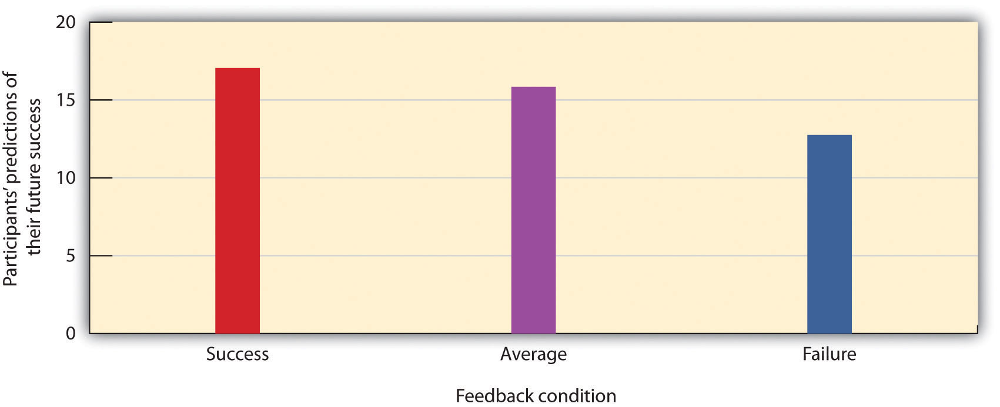
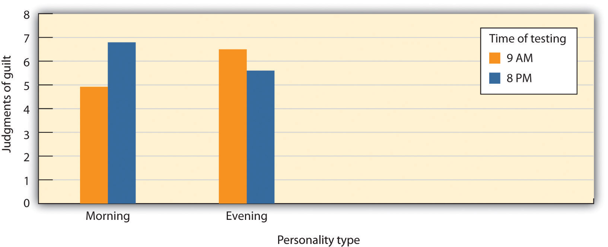

Human beings have very large brains and highly developed cognitive capacities. Thus it will come as no surprise that we meet the challenges that we face in everyday life largely by thinking about them and then planning what to do about them. Over time, people develop a huge amount of knowledge about the self, other people, social relationships, and social groups. This knowledge guides our responses to the people we interact with every day.
People have many memories about their experiences with other people, and they use this information to make predictions about what people will do in the future. This knowledge is gained through learning. The study of learning is closely associated with the behaviorist school of psychology, which includes the psychologists John B. Watson and B. F. Skinner. For behaviorists, the fundamental aspect of learning is the process of conditioningThe ability to connect stimuli (the changes that occur in the environment) with responses (behaviors or other actions).—the ability to connect stimuli (the changes that occur in the environment) with responses (behaviors or other actions). The behaviorists described two types of conditioning that are particularly important in behaviorism: operant conditioning (also known as instrumental conditioning) and classical conditioning (also known as respondent conditioning). When applied to human behavior, these two processes are frequently called, respectively, operant learning and associational learning.
If a child touches a hot radiator, she quickly learns that the radiator is dangerous and is not likely to touch it again. If we have unpleasant experiences with people from a certain state or country, or a positive relationship with a person who has blonde hair or green eyes, we may develop negative or positive attitudes about people with these particular characteristics and attempt to reduce or increase our interactions with them. These changes in our understanding of our environments represent operant learningThe principle that experiences that are followed by positive emotions (reinforcements or rewards) are likely to be repeated, whereas experiences that are followed by negative emotions (punishments) are less likely to be repeated.—the principle that we learn new information as a result of the consequences of our behavior. According to operant learning principles, experiences that are followed by positive emotions (reinforcements or rewards) are likely to be repeated, whereas experiences that are followed by negative emotions (punishments) are less likely to be repeated. In operant learning, the person learns from the consequences of his or her own actions.
Although its principles are very simple, operant learning is probably the most important form of human learning. Operant learning occurs when a schoolroom bully threatens his classmates because doing so allows him to get his way, when a child gets good grades because her parents threaten to punish her if she doesn’t, when we begin to like someone who smiles at us frequently, and in hundreds of other cases every day. Operant learning can also be used to explain how people learn complex behaviors, such as how to read, and to understand complex social behaviors, such as the development of social norms and culture.
The application of operant learning to social psychology is straightforward: How do we know which behaviors are most appropriate in a social situation? We learn, in part, because we have positively reinforced for engaging in the appropriate ones and negatively reinforced for engaging in the inappropriate ones. It does not take us long to learn that Margette is more likely to give us the kiss we have been hoping for if we are nice to her or that our children are more likely to share their toys with others if we reward them for doing it. Operant learning has even been used to explain why some people choose to become criminals. According to this approach, criminal behavior is determined by the reinforcements and punishments that the individual experiences (e.g., with peers and with parents) as a result of his or her behavior (Akers, 1998).Akers, R. L. (1998). Social learning and social structure: A general theory of crime and deviance. Boston, MA: Northeastern University Press.
Associational learningLearning that occurs when an object or event comes to be associated with a natural response, such as an automatic behavior or a positive or negative emotion. occurs when an object or event comes to be associated with a natural response, such as an automatic behavior or a positive or negative emotion. If you’ve ever become hungry when you drive by one of your favorite pizza stores, it is probably because the sight of the pizzeria has become associated with your experiences of enjoying the pizzas. We may enjoy smoking cigarettes, drinking coffee, and eating not only because they give us pleasure themselves but also because they have been associated with pleasant social experiences in the past.
Associational learning also influences our knowledge and judgments about other people. For instance, research has shown that people view men and women who are seen alongside other people who are attractive, or who are said to have attractive girlfriends or boyfriends, more favorably than they do the same people who are seen alongside more average-looking others (Sigall & Landy, 1973).Sigall, H., & Landy, D. (1973). Radiating beauty: Effects of having a physically attractive partner on person perception. Journal of Personality and Social Psychology, 28(2), 218–224. This liking is due to associational learning—we have positive feelings toward the people simply because those people are associated with the positive features of the attractive others.
Associational learning has long been, and continues to be, an effective tool in marketing and advertising (Hawkins, Best, & Coney, 1998).Hawkins, D., Best, R., & Coney, K. (1998.) Consumer behavior: Building marketing strategy (7th ed.). Boston, MA: McGraw-Hill The general idea is to create an advertisement that has positive features so that it creates enjoyment in the person exposed to it. Because the product being advertised is mentioned in the ad, it becomes associated with the positive feelings that the ad creates. In the end, if everything has gone well, seeing the product online or in a store will then create a positive response in the buyer, leading him or her to be more likely to purchase the product.
Can you determine how associational learning is being used in these ads?
A similar strategy is used by corporations that sponsor teams or events. For instance, if people enjoy watching a college basketball team playing basketball, and if that team is sponsored by a product, such as Pepsi, then people may end up experiencing positive feelings when they view a can of Pepsi. Of course, the sponsor wants to sponsor only good teams and good athletes because these create more pleasurable responses.
Advertisers use a variety of techniques to create positive advertisements, including enjoyable music, cute babies, attractive models, and funny spokespeople. In one study, Gorn (1982)Gorn, G. J. (1982). The effects of music in advertising on choice behavior: A classical conditioning approach. Journal of Marketing, 46(1), 94–101. showed research participants pictures of writing pens of different colors, but paired one of the pens with pleasant music and another with unpleasant music. When given a choice as a free gift, more people chose the pen that had been associated with the pleasant music. In another study, Schemer, Matthes, Wirth, and Textor (2008)Schemer, C., Matthes, J. R., Wirth, W., & Textor, S. (2008). Does “passing the Courvoisier” always pay off? Positive and negative evaluative conditioning effects of brand placements in music videos. Psychology & Marketing, 25(10), 923–943. found that people were more interested in products that had been embedded in music videos of artists that they liked and less likely to be interested when the products were in videos featuring artists that they did not like.
Another type of ad that is based on principles of classical conditioning is one that associates fear with the use of a product or behavior, such as those that show pictures of deadly automobile accidents to encourage seatbelt use or images of lung cancer surgery to discourage smoking. These ads have also been found to be effective (Das, de Wit, & Stroebe, 2003; Perloff, 2003; Witte & Allen, 2000),Das, E. H. H. J., de Wit, J. B. F., & Stroebe, W. (2003). Fear appeals motivate acceptance of action recommendations: Evidence for a positive bias in the processing of persuasive messages. Personality and Social Psychology Bulletin, 29(5), 650–664; Perloff, R. M. (2003). The dynamics of persuasion: Communication and attitudes in the 21st century (2nd ed.). Mahwah, NJ: Lawrence Erlbaum Associates; Witte, K., & Allen, M. (2000). A meta-analysis of fear appeals: Implications for effective public health campaigns. Health Education & Behavior, 27(5), 591–615. largely because of conditioning.
Recently, the U.S. government created new negative and graphic images to place on cigarette packs in order to increase an association between negative responses and cigarettes. The idea is that when we see a cigarette and the fear of dying is associated with it, we will be less likely to light up.
The goal of these images is to associate the fear of dying with cigarette smoking.
Taken together then, research studies provide ample evidence of the utility of associational learning in advertising, in ads using positive stimuli and in those using negative stimuli. This does not mean, however, that we are always influenced by these ads. The likelihood that associational learning will be successful is greater when we do not know much about the products, where the differences between products are relatively minor, and when we do not think too carefully about the choices (Schemer et al., 2008).Schemer, C., Matthes, J. R., Wirth, W., & Textor, S. (2008). Does “passing the Courvoisier” always pay off? Positive and negative evaluative conditioning effects of brand placements in music videos. Psychology & Marketing, 25(10), 923–943.
Associational learning is also implicated in the development of unfair and unjustified racial prejudices. We may dislike people from certain racial or ethnic groups because we frequently see them portrayed in the media as associated with violence, drug use, or terrorism. And we may avoid people with certain physical characteristics simply because they remind us of other people we do not like.
Lewicki (1985)Lewicki, P. (1985). Nonconscious biasing effects of single instances on subsequent judgments. Journal of Personality and Social Psychology, 48, 563–574. conducted research that demonstrated the influence of associational learning and how quickly and easily such learning can happen. In his experiment, high school students first had a brief interaction with a female experimenter who had short hair and wore glasses. The study was set up so that the students had to ask the experimenter a question, and (according to random assignment) the experimenter responded in either a negative way or a neutral way toward the participants. Then the students were told to go into a second room in which two experimenters were present and to approach either one of them. The researchers arranged it so that one of the two experimenters looked a lot like the original experimenter and the other one did not (she had longer hair and did not wear glasses). The students were significantly more likely to avoid the experimenter who looked like the original experimenter when that experimenter had been negative to them than when she had treated them neutrally. As a result of associational learning, the negative behavior of the first experimenter unfairly “rubbed off” onto the second.
Donal Carlston and his colleagues (Mae & Carlston, 2005; Skowronski, Carlston, Mae, & Crawford, 1998)Mae, L., & Carlston, D. E. (2005). Hoist on your own petard: When prejudiced remarks are recognized and backfire on speakers. Journal of Experimental Social Psychology, 41(3), 240–255; Skowronski, J. J., Carlston, D. E., Mae, L., & Crawford, M. T. (1998). Spontaneous trait transference: Communicators take on the qualities they describe in others. Journal of Personality and Social Psychology, 74(4), 837–848. discovered still another way that associational learning can occur: When we say good or bad things about another person in public, the people who hear us say these things associate those characteristics with us, such that they like people who say positive things and dislike people who say negative things. The moral is clear—associational learning is powerful, so be careful what you do and say.
In addition to operant and associational learning, people learn by observing the behavior of others. This is known as observational learning (modeling)Learning that occurs through exposure to the behavior of others.. To demonstrate the importance of observational learning in children, Bandura and Walters (1959)Bandura, A., & Walters, R. H. (1959). Adolescent aggression. New York, NY: Ronald Press. made a film of a young woman beating up a bobo doll—an inflatable balloon with a weight in the bottom that makes it bob back up when you knock it down. The woman violently hit the doll, shouting “sockeroo!” She also kicked it, sat on it, and hit it with a hammer.
Bandura showed his film to groups of nursery school children and then let them play in a room in which there were some really fun toys. To create some frustration in the children, Bandura let the children play with the fun toys for only a couple of minutes before taking them away. Then Bandura gave the children a chance to play with the bobo doll. You probably won’t be surprised to hear that many of the children imitated the young woman in the film. They punched the bobo doll, shouted “sockeroo,” and hit the doll with a hammer.
Bandura Discussing Clips From His Modeling Studies
(click to see video)Take a moment to see how Albert Bandura explains his research into the modeling of aggression in children.
For some of the children, the female model was shown being rewarded for engaging in the behavior, and for other children, she was punished. In support of the principles of operant learning, Bandura’s study found that the children were more likely to be aggressive when the model had been rewarded for the behavior and were less likely to be so when the model had been punished. But even the children who did not see the model receive any reward nevertheless imitated the behavior to some extent. One of the major contributions of this study is the demonstration that children learned new types of aggressive behaviors simply by observing and imitating others.
Observational learning is involved in much of our learning about our social worlds. Observational learning teaches us that Hank is friendly, that Joanna is selfish, and that Frankie has a crush on Malik. In other cases, our knowledge comes more indirectly, from what we read in books or see on TV, or from what our friends tell us, for instance.
Observational learning is useful because it allows people to learn without having to actually engage in what might be a risky behavior. As Bandura put it,
the prospects for [human] survival would be slim indeed if one could learn only by suffering the consequences of trial and error. For this reason, one does not teach children to swim, adolescents to drive automobiles, and novice medical students to perform surgery by having them discover the appropriate behavior through the consequences of their successes and failures. The more costly and hazardous the possible mistakes, the heavier is the reliance on observational learning from competent learners. (1977, p. 12).Bandura, A. (1977). Self-efficacy: Toward a unifying theory of behavior change. Psychological Review, 84, 191–215.
Bandura considered observational learning to be a fundamental determinant of all social behavior and argued that it is most likely to lead to learning when people pay attention to the behavior of models and are highly motivated to imitate the models.
The outcome of learning is knowledge, and this knowledge is stored in schemas. In the brain, our schemas reside primarily in the prefrontal cortexThe part of the brain that lies in front of the motor areas of the cortex and that helps us remember the characteristics and actions of other people, plan complex social behaviors, and coordinate our behaviors with those of others., the part of the brain that lies in front of the motor areas of the cortex and that helps us remember the characteristics and actions of other people, plan complex social behaviors, and coordinate our behaviors with those of others (Mitchell, Mason, Macrae, & Banaji, 2006).Mitchell, J. P., Mason, M. F., Macrae, C. N., & Banaji, M. R. (2006). Thinking about others: The neural substrates of social cognition. In J. T. Cacioppo, P. S. Visser, & C. L. Pickett (Eds.), Social neuroscience: People thinking about thinking people (pp. 63–82). Cambridge, MA: MIT Press. The prefrontal cortex is the “social” part of the brain. It is also the newest part of the brain, evolutionarily speaking, and has enlarged as the social relationships among humans have become more frequent, important, and complex. Demonstrating its importance in social behaviors, people with damage to the prefrontal cortex are likely to experience changes in social behaviors, including memory, personality, planning, and morality (Koenigs et al., 2007).Koenigs, M., Young, L., Adolphs, R., Tranel, D., Cushman, F., Hauser, M., & Damasio, A. (2007). Damage to the prefontal cortex increases utilitarian moral judgments. Nature, 446(7138), 908–911.
The prefrontal cortex is the area of the brain that stores information about people and about our interactions with them.
Because they represent our past experience, and because past experience is useful for prediction, our schemas serve as expectations about future events. For instance, if you have watched Italian movies or if you have visited Italy, you might have come to the conclusion that Italians frequently gesture a lot with their hands when they talk—that they are quite expressive. This knowledge will be contained in your group schema about Italians. Therefore, when you meet someone who is Italian, or even when you meet someone who reminds you of an Italian person, you may well expect that they will gesture when they talk.
Having a database of social knowledge to draw on is obviously extremely useful. If we didn’t know or couldn’t remember anything about anyone or about anything that we had encountered in the past, our life would be difficult indeed because we would continually have to start our learning over again. Our schemas allow us to better understand people and help us make sense of information, particularly when the information is unclear or ambiguous. They also allow us to “fill in the blanks” by making guesses about what other people are probably like or probably going to do in cases where things are uncertain. Furthermore, the fact that different people have different past experiences—and thus that their schemas and attitudes are different—helps explain why different people draw different conclusions about the same events.
Once they have developed, schemas influence our subsequent learning, such that the new people and situations we encounter are interpreted and understood in terms of our existing knowledge (Piaget & Inhelder, 1966; Taylor & Crocker, 1981).Piaget, J., and Inhelder, B. (1962). The psychology of the child. New York, NY: Basic Books; Taylor, S. E., & Crocker, J. (1981). Schematic bases of social information processing. In E. T. Higgins, C. P. Herman, & M. P. Zanna (Eds.), Social cognition: The Ontario symposium (Vol. 1, pp. 89–134). Hillsdale, NJ: Lawrence Erlbaum Associates. Imagine, for instance, that you have a schema—and thus an expectation—that Italians are very expressive, and you now meet Bianca, who has arrived at your school directly from Rome, Italy. You immediately expect her to be outgoing and expressive. However, as you get to know Bianca, you discover that she is not at all expressive and does not “talk with her hands.” In fact, she is quite shy and reserved. How does existing information influence how we react to the new information that we receive?
One possibility is that the new information simply updates our existing expectations. We might decide, for instance, that there is more variation among Italians in terms of expressiveness than we had previously realized, and we might resolve that Italians can sometimes be very shy and thoughtful. Or perhaps we might note that although Bianca is Italian, she is also a woman. This might lead us change our schema such that we now believe that although Italian men are expressive, Italian women are not. When existing schemas change on the basis of new information, we call the process accommodationThe process that occurs when existing schemas change on the basis of new information..
In other cases, however, we engage in assimilationThe process that occurs when existing knowledge influences new information in a way that makes the conflicting information fit with existing knowledge, thus reducing the likelihood of change., a process in which our existing knowledge influences new conflicting information to better fit with our existing knowledge, thus reducing the likelihood of schema change. If we used assimilation, instead of changing our expectations about Italians, we might try to reinterpret Bianca’s unexpected behavior to make it more consistent with our expectations. For instance, we might decide that Bianca’s behavior is actually more expressive than we thought it was at first, or that she is acting in a more shy and reserved manner because she is trying to impress us with her thoughtfulness or because she is not yet comfortable at the new school. Or we might assume that she is expressive at home with her family but not around us. In these cases, the process of assimilation has led us to process the new information about Bianca in a way that allows us to keep our existing expectations about Italians more generally intact.
As we have seen in our earlier discussion, accommodation (i.e., the changing of beliefs on the basis of new information) does occur—it is the process of learning itself. Our beliefs about Italians may well change through our encounters with Bianca. However, there are many factors that lead us to assimilate information to our expectations rather than to accommodate our expectations to fit new information. In fact, we can say that in most cases, once a schema is developed, it will be difficult to change it because the expectation leads us to process new information in ways that serve to strengthen it rather than to weaken it.
The tendency toward assimilation is so strong that it has substantial effects on our everyday social cognition. One outcome of assimilation is the confirmation biasThe tendency for people to favor information that confirms their expectations, regardless of whether the information is true.—the tendency for people to favor information that confirms their expectations, regardless of whether the information is true.
The Confirmation Bias
Consider the results of a research study conducted by Ross, Lepper, and Hubbard (1975)Ross, L., Lepper, M. R., & Hubbard, M. (1975). Perseverance in self-perception and social perception: Biased attributional processes in the debriefing paradigm. Journal of Personality & Social Psychology, 32, 880–892. that demonstrated the confirmation bias. In this research, high school students were asked to read a set of 25 pairs of cards, in which each pair supposedly contained one real and one fake suicide note. The students’ task was to examine both cards and to decide which of the two notes was written by an actual suicide victim. After the participants read each card and made their decision, the experimenter told them whether their decision was correct or incorrect. However, the feedback was not at all based on the participants’ responses. Rather, the experimenters arranged the feedback so that, on the basis of random assignment, different participants were told either that they were successful at the task (they got 24 out of 25 correct), average at the task (they got 17 out of 25 correct), or poor at the task (they got 10 out of 25 correct), regardless of their actual choices.
At this point, the experimenters stopped the experiment and completely explained to the participants what had happened, including how the feedback they had received was predetermined so that they would learn that they were either successful, average, or poor at the task. They were even shown the schedule that the experimenters had used to give them the feedback. Then the participants were asked, as a check on their reactions to the experiment, to indicate how many answers they thought they would get correct on a subsequent—and real—series of 25 card pairs.
As you can see in the following figure, the results of this experiment showed a clear tendency for expectations to be maintained even in the face of information that should have discredited them. Students who had been told that they were successful at the task indicated that they thought they would get more responses correct in a real test of their ability than those who thought they were average at the task, and students who thought they were average thought they would do better than those told they were poor at the task. In short, once students had been convinced that they were either good or bad at the task, they really believed it. It then became very difficult to remove their beliefs, even by providing information that should have effectively done so.
Figure 2.1 The Confirmation Bias
In this demonstration of the power of assimilation, participants were given initial feedback that they were good, average, or poor on a task but then told that the feedback was entirely false. The feedback, which should have been discounted, nevertheless continued to influence participants’ estimates of how well they would do on a future task. Data are from Ross, Lepper, and Hubbard (1975).Ross, L., Lepper, M. R., & Hubbard, M. (1975). Perseverance in self-perception and social perception: Biased attributional processes in the debriefing paradigm. Journal of Personality and Social Psychology, 32, 880–892.
Why do we tend to hold onto our beliefs rather than change them? One reason that our beliefs often outlive the evidence on which they are supposed to be based is that people come up with reasons to support their beliefs. People who learned that they were good at detecting real suicide notes probably thought of a lot of reasons why this might be the case—“Geez, I predicted that Suzy would break up with Billy” or “I knew that my Mom was going to be sad after I left for college”—whereas the people who learned that they were not good at the task probably thought of the opposite types of reasons—“I had no idea that Jean was going to drop out of high school.” You can see that these tendencies will produce assimilation—the interpretation of our experiences in ways that support our existing beliefs. Indeed, research has found that perhaps the only way to reduce our tendencies to assimilate information into our existing belief is to explicitly force people to think about exactly the opposite belief (Anderson & Sechler, 1986).Anderson, C. A., & Sechler, E. S. (1986). Effects of explanation and counterexplanation on the development and use of social theories. Journal of Personality and Social Psychology, 50(1), 24–34.
In some cases, our existing knowledge acts to direct our attention toward information that matches our expectations and prevents us from attempting to attend to or acknowledge conflicting information (Fiske & Neuberg, 1990).Fiske, S. T., & Neuberg, S. L. (1990). A continuum of impression formation, from category based to individuating processes: Influences of information and motivation on attention and interpretation. In M. P. Zanna (Ed.), Advances in experimental social psychology (Vol. 23, pp. 1–74). New York, NY: Academic. To return to our example of Bianca from Rome, when we first meet her, we may immediately begin to look for signs of expressiveness in her behavior and personality. Because we expect people to confirm our expectations, we frequently respond to new people as if we already know what they are going to be like. Yaacov Trope and Erik Thompson (1997)Trope, Y., & Thompson, E. (1997). Looking for truth in all the wrong places? Asymmetric search of individuating information about stereotyped group members. Journal of Personality and Social Psychology, 73, 229–241. found in their research that individuals addressed fewer questions to people about whom they already had strong expectations and that the questions they did ask were likely to confirm the expectations they already had. Because we believe that Italians are expressive, we expect to see that behavior in Bianca, we preferentially attend to information that confirms those beliefs, and we tend to ignore any disconfirming information. The outcome is that our expectations resist change (Fazio, Ledbetter, & Towles-Schwen, 2000).Fazio, R. H., Ledbetter, J. E., & Towles-Schwen, T. (2000). On the costs of accessible attitudes: Detecting that the attitude object has changed. Journal of Personality and Social Psychology, 78(2), 197–210.
Our reliance on schemas can also make it more difficult for us to “think outside the box.” Peter Wason (1960)Wason, P. (1960). On the failure to eliminate hypotheses in a conceptual task. The Quarterly Journal of Experimental Psychology, 12(3), 129–140. asked college students to determine the rule that was used to generate the numbers 2-4-6 by asking them to generate possible sequences and then telling them if those numbers followed the rule. The first guess that students made was usually “consecutive ascending even numbers,” and they then asked questions designed to confirm their hypothesis (“Does 102-104-106 fit?” “What about 434-436-438?”). Upon receiving information that those guesses did fit the rule, the students stated that the rule was “consecutive ascending even numbers.” But the students’ use of the confirmation bias led them to ask only about instances that confirmed their hypothesis and not about those that would disconfirm it. They never bothered to ask whether 1-2-3 or 3-11-200 would fit; if they had, they would have learned that the rule was not “consecutive ascending even numbers” but simply “any three ascending numbers.” Again, you can see that once we have a schema (in this case, a hypothesis), we continually retrieve that schema from memory rather than other relevant ones, leading us to act in ways that tend to confirm our beliefs.
Because expectations influence what we attend to, they also influence what we remember. One frequent outcome is that information that confirms our expectations is more easily processed, is more easily understood, and thus has a bigger impact than does information that disconfirms our expectations. There is substantial research evidence indicating that when processing information about social groups, individuals tend to particularly remember information better that confirms their existing beliefs about those groups (Fyock & Stangor, 1994; Van Knippenberg & Dijksterhuis, 1996).Fyock, J., & Stangor, C. (1994). The role of memory biases in stereotype maintenance. British Journal of Social Psychology, 33, 331–343; Van Knippenberg, A., & Dijksterhuis, A. (1996). A posteriori sterotype activation: The preservation of sterotypes through memory distortion. Social Cognition, 14, 21–54. If we have the (statistically erroneous) stereotype that women are bad drivers, we tend to remember the cases where we see a woman driving poorly but to forget the cases where we see a woman driving well. This of course strengthens and maintains our beliefs and produces even more assimilation. And our schemas may also be maintained because when people get together, they talk about other people in ways that tend to express and confirm existing beliefs (Ruscher & Duval, 1998; Schaller & Conway, 1999).Ruscher, J. B., & Duval, L. L. (1998). Multiple communicators with unique target information transmit less stereotypical impressions. Journal of Personality and Social Psychology, 74(2), 329–344; Schaller, M., & Conway, G. (1999). Influence of impression-management goals on the emerging content of group stereotypes: Support for a social-evolutionary perspective. Personality and Social Psychology Bulletin, 25, 819–833.
Darley and Gross (1983)Darley, J. M., & Gross, P. H. (1983). A hypothesis-confirming bias in labeling effects. Journal of Personality and Social Psychology, 44, 20–33. demonstrated how schemas about social class could influence memory. In their research, they gave participants a picture and some information about a fourth-grade girl named Hannah. To activate a schema about her social class, Hannah was pictured sitting in front of a nice suburban house for one half of the participants and was pictured in front of an impoverished house in an urban area for the other half. Then the participants watched a video that showed Hannah taking an intelligence test. As the test went on, Hannah got some of the questions right and some of them wrong, but the number of correct and incorrect answers was the same in both conditions. Then the participants were asked to remember how many questions Hannah got right and wrong. Demonstrating that stereotypes had influenced memory, the participants who thought that Hannah had come from an upper-class background judged that she had gotten more correct answers than those who thought she was from a lower-class background.
This is not to say that we only remember information that matches our expectations. Sometimes we encounter information that is so extreme and so conflicting with our expectations that we cannot help but attend to and remember it (Srull & Wyer, 1989).Srull, T., & Wyer, R. (1989). Person memory and judgment. Psychological Review, 96(1), 58–83. Imagine that you have formed an impression of a good friend of yours as a very honest person. One day you discover, however, that he has taken some money from your wallet without getting your permission or even telling you. It is likely that this new information—because it is so personally involving and important—will have a dramatic effect on your perception of your friend and that you will remember it for a long time. In short, information that is either consistent with, or very inconsistent with, an existing schema or attitude is likely to be well remembered.
Still another way that our expectations tend to maintain themselves is by leading us to act toward others on the basis of our expectations, creating a self-fulfilling prophecy. A self-fulfilling prophecyAn effect that occurs when our expectations about others lead us to behave toward those others in ways that make those expectations come true. is a process that occurs when our expectations about others lead us to behave toward those others in ways that make those expectations come true. If I have a stereotype that Italians are fun, then I may act toward Bianca in a friendly way. My friendly behavior may be reciprocated by Bianca, and if many other people also engage in the same positive behaviors with her, in the long run she may actually become a friendlier person, thus confirming our initial expectations. Of course, the opposite is also possible—if I believe that short people are boring or that women are overly emotional, my behavior toward short people and women may lead me to maintain those more negative, and probably inaccurate, beliefs as well.
Self-fulfilling prophecies occur when our existing expectations influence our behavior toward others, thereby creating responses in those others that reinforce our existing expectations.
We can now begin to see why an individual who initially makes a judgment that a person has engaged in a given behavior (e.g., an eyewitness who believes that they saw a given person commit a crime) will find it very difficult to change his or her mind about that decision later. Even if the individual is provided with evidence that suggests that he or she was wrong, that individual will likely assimilate that information to the existing belief. Assimilation is thus one of many factors that help account for the inaccuracy of eyewitness testimony.
Schemas as Energy Savers
If schemas serve in part to help us make sense of the world around us, then we should be particularly likely to use them in situations where there is a lot of information to learn about, or when we have few cognitive resources available to process information. Schemas function like energy-savers, to help us keep track of things when information processing gets complicated.
Stangor and Duan (1991)Stangor, C., & Duan, C. (1991). Effects of multiple task demands upon memory for information about social groups. Journal of Experimental Social Psychology, 27, 357–378. tested the hypothesis that people would be more likely to develop schemas when they had a lot of information to learn about. In the research, participants were shown information describing the behaviors of people who supposedly belonged to different social groups, although the groups were actually fictitious and were labeled only as the “red group,” the “blue group,” the “yellow group,” and the “green group.” Each group engaged in behaviors that were primarily either honest, dishonest, intelligent, or unintelligent. Then, after they had read about the groups, the participants were asked to judge the groups and to recall as much information that they had read about them as they could.
Stangor and Duan found that participants remembered more stereotype-supporting information about the groups, when they were required to learn about four different groups than when they only needed to learn about one group or two groups. This result is consistent with the idea that we use our stereotypes more when “the going gets rough”—that is, when we need to rely on them to help us make sense of new information.
Bodenhausen (1990)Bodenhausen, G. V. (1990). Stereotypes as judgmental heuristics: Evidence of circadian variations in discrimination. Psychological Science, 1, 319–322. presented research participants with information about court cases in jury trials. Furthermore, he had obtained self-reports from the participants about whether they considered themselves to be primarily “morning people” (those who feel better and are more alert in the morning) or “evening people” (those who are more alert in the evening). As shown in the following figure, Bodenhausen found that participants were more likely to make use of their stereotypes when they were judging the guilt or innocence of the individuals on trial at the time of day when the participants acknowledged that they were normally more fatigued. People who reported being most alert in the morning stereotyped more at night, and vice versa. This experiment thus provides more support for the idea that schemas—in this case, those about social groups—serve, in part, to make our lives easier and that we rely on them when we need to rely on cognitive efficiency—for instance, when we are tired.
Figure 2.2
Schemas are particularly powerful when we are tired. Participants were asked to judge the degree to which a defendant was guilty of a crime for which he was accused (however unfairly) and for which the crime fit the stereotype (e.g., that student athletes were likely to cheat on exams). Participants had previously indicated whether they were “morning people” or “night people” on a questionnaire and were tested in either the morning or the evening. Data from Bodenhausen (1990).Bodenhausen, G. V. (1990). Stereotypes as judgmental heuristics: Evidence of circadian variations in discrimination. Psychological Science, 1, 319–322.